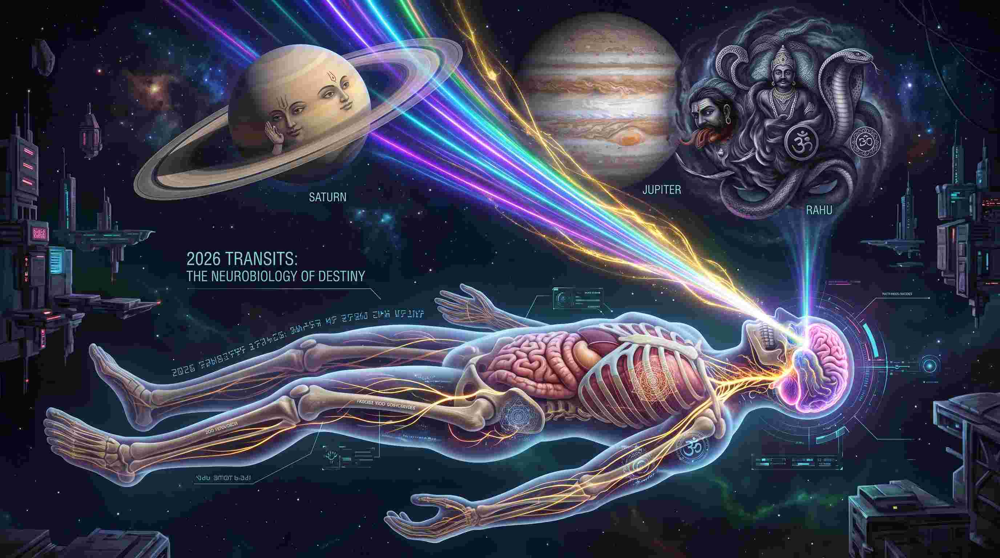
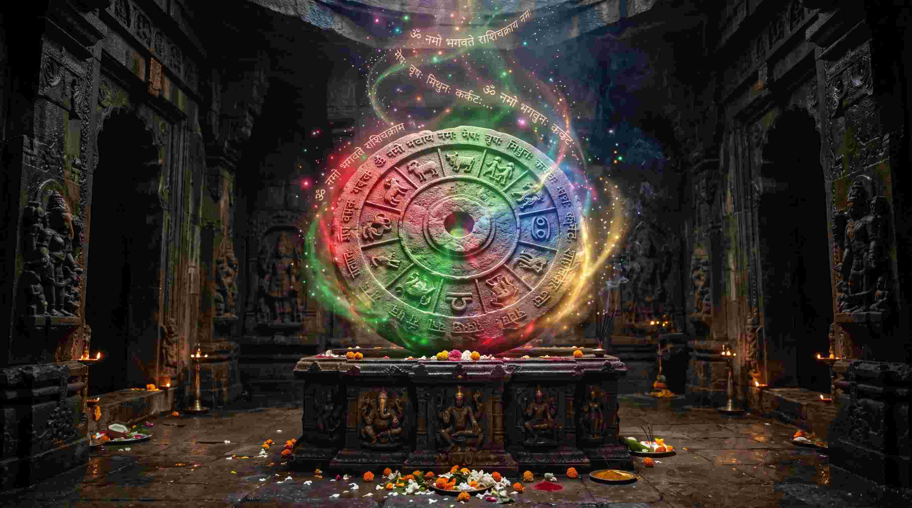

जब एक वर्ष समाप्त होता है और नया वर्ष शुरू होता है, तो हर व्यक्ति के मन में एक ही सवाल होता है— "यह नया साल मेरे बैंक बैलेंस, मेरे स्वास्थ्य और मेरे करियर के लिए कैसा रहेगा?"
एक वैदिक ज्योतिषी होने के नाते मैं वर्ष 2026 को एक 'सामान्य वर्ष' के रूप में नहीं देखता। 2026 एक 'बदलाव का वर्ष' (Shifting Year) है, जिसमें शनि, गुरु और राहु-केतु जैसे बड़े ग्रहों के गोचर करियर, धन और रिश्तों पर गहरा प्रभाव डालेंगे।
"ज्योतिष भविष्य बताने का कोई जादू नहीं है; यह समय को समझने की विद्या है। जब शनि और राहु अपनी चाल बदलते हैं, तो दुनिया के बाज़ार से लेकर हमारे निजी जीवन तक, सब पर उसका प्रभाव दिखता है।"

2026 के तीन बड़े गेम-चेंजर (Major Planetary Transits)
2026 का भविष्यफल जानने से पहले, यह समझना आवश्यक है कि कौन सी ब्रह्मांडीय शक्तियां (Planetary Transits) इस वर्ष को नियंत्रित कर रही हैं:
- शनि का गोचर (Saturn's Movement): अनुशासन और कर्म के कारक शनि देव 2026 में अपनी चाल बदलेंगे। यह बदलाव दुनिया भर में रोज़गार (Employment) और रियल एस्टेट मार्केट को प्रभावित करेगा। जिन पर साढ़ेसाती या ढैय्या है, उन्हें धैर्य और मेहनत से काम लेना होगा।
- राहु-केतु का अक्ष परिवर्तन (Rahu-Ketu Axis): राहु (भ्रम और तकनीक) और केतु (वैराग्य और अध्यात्म) अपनी राशियां बदलेंगे। यह गोचर आर्टिफिशियल इंटेलिजेंस (AI Tools) और डिजिटल फाइनेंस में बड़े बदलाव का संकेत देता है।
- बृहस्पति का आशीर्वाद (Jupiter's Grace): ज्ञान, विस्तार और लिवर (Liver/Metabolism) का कारक ग्रह गुरु अपनी राशि बदलकर कुछ विशेष राशियों के लिए धन और सौभाग्य के नए द्वार खोलेगा।
सभी 12 राशियों का सम्पूर्ण भविष्यफल (Aries to Pisces 2026)
नीचे सभी 12 राशियों के लिए करियर, स्वास्थ्य के प्रति सावधानी और प्रेम संबंधों का सटीक विश्लेषण दिया गया है। (नोट: अधिक सटीकता के लिए अपनी जन्म कुंडली (Lagna) और चंद्र राशि (Moon Sign) दोनों को मिलाकर पढ़ें।)
मेष राशि (Aries 2026)
सार: ऊर्जा का विस्फोट और करियर का चरम (Explosion of Energy and Career Peak)।
करियर और वित्त (Career & Finance):2026 आपके लिए 1000 वॉट के बल्ब की तरह है। राहु और मंगल के प्रभाव से आप अपने कार्यक्षेत्र में आक्रामक (Aggressive) निर्णय लेंगे। यदि आप टेक्नोलॉजी, मेडिसिन या स्टार्टअप में हैं, तो यह वर्ष आपको अप्रत्याशित (Unexpected) आर्थिक वृद्धि देगा। हालांकि, ओवर-इन्वेस्टमेंट (Over-investment) से बचें।
स्वास्थ्य के प्रति सावधानी:मेष राशि वालों के लिए इस वर्ष काम का दबाव अधिक रह सकता है। जल्दबाज़ी और क्रोध से बचें, पर्याप्त आराम करें और नियमित व्यायाम करें। मन को शांत रखने के लिए हनुमान चालीसा का पाठ श्रेष्ठ उपाय है।
प्रेम और संबंध:आपके हाई-एनर्जी लेवल के कारण पार्टनर के साथ ईगो क्लैश (Ego clashes) हो सकते हैं। अपने गुस्से (Amygdala response) पर नियंत्रण रखें।
वृषभ राशि (Taurus 2026)
सार: आर्थिक विस्तार और गले का चक्र (Financial Expansion and Throat Chakra)।
करियर और वित्त (Career & Finance):गुरु (Jupiter) का गोचर आपके लिए 'धन के भंडार' खोलने वाला है। पिछले 2 सालों की आपकी जो मेहनत अटकी हुई थी, वह 2026 में लिक्विड कैश (Liquid Cash) में बदलेगी। बैंकिंग, कला, और रियल एस्टेट से जुड़े लोगों को भारी लाभ होगा।
स्वास्थ्य के प्रति सावधानी:वृषभ राशि वालों को खान-पान में संयम रखना होगा — अधिक मीठा और जंक फूड कम करें। सुख-सुविधा पर खर्च भी सोच-समझकर करें। शुक्रवार को श्री सूक्त का पाठ लाभकारी रहेगा।
प्रेम और संबंध:यह वर्ष पारिवारिक खुशियों का है। यदि आप विवाह की योजना बना रहे हैं, तो साल के मध्य में उत्तम योग बनेंगे।
मिथुन राशि (Gemini 2026)
सार: बड़ा बदलाव और नेटवर्किंग (Major Shifts and Networking)।
करियर और वित्त (Career & Finance):2026 में आपकी कम्युनिकेशन स्किल्स (Communication Skills) आपके लिए जादू का काम करेंगी। यदि आप मार्केटिंग, मीडिया, या सोशल मीडिया (YouTube/Content Creation) में हैं, तो राहु आपको वायरल कर सकता है। जॉब स्विच (Job switch) के प्रबल योग हैं।
स्वास्थ्य के प्रति सावधानी:मिथुन राशि वालों को ओवर-थिंकिंग से बचना होगा, जिससे नींद प्रभावित हो सकती है। प्राणायाम (अनुलोम-विलोम) और विष्णु सहस्रनाम का पाठ मन को शांत रखने में सहायक रहेगा।
प्रेम और संबंध:रिश्तों में गलतफहमियां (Miscommunications) आ सकती हैं। अपने पार्टनर को पूरा समय दें।
कर्क राशि (Cancer 2026)
सार: भाग्य का उदय और भावनात्मक संतुलन (Destiny Unlocking and Emotional Balance)।
करियर और वित्त (Career & Finance):गुरु की दृष्टि आपके करियर भाव पर पड़ने से 2026 में आपको कार्यस्थल पर पदोन्नति (Promotion) और सम्मान मिलेगा। जो लोग विदेश (Foreign) जाना चाहते हैं, उनके लिए यह वर्ष वीजा या इमिग्रेशन के लिए बहुत शुभ है।
स्वास्थ्य के प्रति सावधानी:कर्क राशि वाले भावुक स्वभाव के होते हैं; इस वर्ष चिंता को मन पर हावी न होने दें। भोजन समय पर और शांत मन से करें। भोजन से पहले अन्नपूर्णा स्तोत्र का पाठ शुभ रहेगा।
प्रेम और संबंध:पारिवारिक जीवन में मधुरता आएगी। माता के स्वास्थ्य में सुधार होगा।
सिंह राशि (Leo 2026)
सार: गुप्त धन और सत्ता की प्राप्ति (Secret Wealth and Authority)।
करियर और वित्त (Career & Finance):2026 आपके लिए नेतृत्व (Leadership) का वर्ष है। आपको कोई बड़ा प्रोजेक्ट या सरकारी टेंडर मिल सकता है। गुप्त स्रोतों (Secret sources) या शेयर बाजार (Stock Market) से अचानक धन लाभ के प्रबल योग हैं।
स्वास्थ्य के प्रति सावधानी:सिंह राशि वालों को इस वर्ष काम के साथ अपनी दिनचर्या का भी ध्यान रखना होगा — समय पर सोना, व्यायाम और संतुलित भोजन। प्रतिदिन सूर्य को अर्घ्य और आदित्य हृदय स्तोत्र का पाठ आत्मबल बढ़ाएगा।
प्रेम और संबंध:अहंकार (Ego) के कारण रिश्तों में दूरियां आ सकती हैं। क्षमा करना सीखें।
कन्या राशि (Virgo 2026)
सार: साझेदारी और परफेक्शन (Partnerships and Perfection)।
करियर और वित्त (Career & Finance):इस वर्ष आपकी तरक्की आपकी पार्टनरशिप्स (Partnerships) पर निर्भर करेगी। अकेले काम करने के बजाय टीम में काम करें। विदेशी व्यापार (Import-Export) से जुड़े लोगों को भारी लाभ होगा।
स्वास्थ्य के प्रति सावधानी:कन्या राशि वाले हर काम में परफेक्शन चाहते हैं, जिससे तनाव बढ़ सकता है। छोटी बातों की चिंता छोड़ें। ध्यान (Meditation) और नारायण कवच का पाठ मन को स्थिर रखेगा।
प्रेम और संबंध:अविवाहित लोगों को इस वर्ष अपना जीवनसाथी (Soulmate) मिल सकता है।
तुला राशि (Libra 2026)
सार: शत्रुओं पर विजय और सफलता (Overcoming Enemies and Success)।
करियर और वित्त (Career & Finance):2026 में आप अपने सभी प्रतिस्पर्धियों (Competitors) को पीछे छोड़ देंगे। जो भी लीगल मामले (Legal cases) अटके हुए थे, वे आपके पक्ष में आएंगे। नौकरीपेशा लोगों के वेतन (Salary) में अच्छी वृद्धि होगी।
स्वास्थ्य के प्रति सावधानी:तुला राशि वालों को दिनचर्या में संतुलन रखना होगा — पर्याप्त पानी पिएं और लंबे समय तक बैठे रहने से बचें। नवग्रह स्तोत्र का पाठ ग्रहों की शांति के लिए शुभ रहेगा।
प्रेम और संबंध:वैवाहिक जीवन में कुछ उतार-चढ़ाव आ सकते हैं, शांति से काम लें।
वृश्चिक राशि (Scorpio 2026)
सार: रचनात्मकता और संतान सुख (Creative Burst and Happiness)।
करियर और वित्त (Career & Finance):यह वर्ष आपके लिए बहुत ही 'क्रिएटिव' (Creative) साबित होगा। यदि आप रिसर्च (Research), शेयर मार्केट या किसी भी गुप्त विद्या (Occult) में हैं, तो आपको अपार सफलता मिलेगी। धन आगमन के नए स्रोत (Passive income) खुलेंगे।
स्वास्थ्य के प्रति सावधानी:वृश्चिक राशि वालों को इस वर्ष भावनाओं और क्रोध पर नियंत्रण रखना होगा। मंगलवार को अंगारक स्तोत्र का पाठ और रक्तदान जैसे सेवा-कार्य आपके लिए शुभ रहेंगे।
प्रेम और संबंध:प्रेम जीवन में जुनून (Passion) रहेगा। संतान प्राप्ति के उत्तम योग हैं।
धनु राशि (Sagittarius 2026)
सार: घर-जायदाद और मानसिक शांति (Property and Home Peace)।
करियर और वित्त (Career & Finance):यदि आप नया घर, वाहन (Vehicle) या कोई प्रॉपर्टी (Property) खरीदने की योजना बना रहे हैं, तो 2026 आपका साल है। करियर में स्थिरता (Stability) आएगी। विदेश से जुड़े कार्यों में लाभ होगा।
स्वास्थ्य के प्रति सावधानी:धनु राशि लिवर (Liver) और जांघों (Thighs) का कारक है। इस वर्ष फैटी लिवर (Fatty Liver) या वजन बढ़ने (Weight gain) की समस्या हो सकती है। उपवास (Fasting) और विष्णु सहस्रनाम का पाठ आपके मेटाबॉलिज्म को ठीक रखेगा।
प्रेम और संबंध:माता के साथ संबंध मधुर होंगे। परिवार में कोई मांगलिक कार्य हो सकता है।
मकर राशि (Capricorn 2026)
सार: पराक्रम और नई शुरुआत (Courage and New Beginnings)।
करियर और वित्त (Career & Finance):साढ़ेसाती का अंतिम चरण आपको सोने की तरह तपाकर कुंदन बना चुका है। 2026 में आप पूरे आत्मविश्वास के साथ नए प्रोजेक्ट्स शुरू करेंगे। शॉर्ट ट्रिप्स (Short travels) और नेटवर्किंग से आपको बड़ा वित्तीय लाभ (Financial Gain) होगा।
स्वास्थ्य के प्रति सावधानी:मकर राशि वालों के लिए यह परिश्रम का वर्ष है। काम के साथ अपने शरीर का भी ध्यान रखें — नियमित व्यायाम और संतुलित भोजन अपनाएं। शनिवार को दशरथ कृत शनि स्तोत्र का पाठ शुभ फल देगा।
प्रेम और संबंध:भाई-बहनों का सहयोग मिलेगा। पुराने टूटे हुए रिश्ते वापस जुड़ सकते हैं।
कुंभ राशि (Aquarius 2026)
सार: धन संचय और वाणी का प्रभाव (Wealth Accumulation and Speech)।
करियर और वित्त (Career & Finance):यह वर्ष आपके बैंक बैलेंस को बढ़ाने वाला है। साढ़ेसाती के मध्य चरण के बावजूद, गुरु की कृपा आपको पैतृक संपत्ति (Ancestral Property) या फिक्स्ड डिपॉजिट्स (Fixed Deposits) में लाभ दिलाएगी। आप जो बोलेंगे, लोग उसे सुनेंगे।
स्वास्थ्य के प्रति सावधानी:कुंभ राशि वालों को देर रात तक जागने की आदत छोड़नी होगी। सोने से पहले ध्यान (Meditation) और शिव कवच का पाठ मन को शांति देगा।
प्रेम और संबंध:अपनी वाणी (Harsh Speech) पर नियंत्रण रखें, अन्यथा परिवार में अकारण क्लेश हो सकता है।
मीन राशि (Pisces 2026)
सार: आत्म-खोज और बड़ा परिवर्तन (Identity Transformation)।
करियर और वित्त (Career & Finance):2026 आपके व्यक्तित्व (Personality) को पूरी तरह से बदलने वाला वर्ष है। आप अपने पुराने करियर को छोड़कर कुछ बिल्कुल नया शुरू कर सकते हैं। शुरुआत में संघर्ष होगा, लेकिन आध्यात्मिक और वित्तीय (Financial) रूप से यह एक 'उदय' (Rising) का वर्ष है।
स्वास्थ्य के प्रति सावधानी:मीन राशि वालों पर साढ़ेसाती का प्रभाव रहेगा, इसलिए धैर्य रखें और जल्दबाज़ी में बड़े निर्णय न लें। यात्रा में सावधानी रखें और पर्याप्त आराम करें। नारायण कवच का पाठ सुरक्षा का भाव देगा।
प्रेम और संबंध:रिश्तों में 'बाउंड्रीज' (Boundaries) सेट करना सीखें। लोग आपका भावनात्मक (Emotional) फायदा उठा सकते हैं।

निष्कर्ष: शिव-भक्ति का उत्सव
वर्ष 2026 में ग्रहों का प्रभाव न तो पूरी तरह अच्छा है और न ही बुरा; यह इस पर निर्भर करता है कि आप उसका उपयोग कैसे करते हैं। अपनी राशि के अनुसार बताए गए उपाय श्रद्धा से करें, मेहनत जारी रखें और स्वास्थ्य से जुड़ी किसी भी समस्या में डॉक्टर की सलाह अवश्य लें।
याद रखें, ग्रह केवल रास्ता दिखाते हैं, उस रास्ते पर चलना आपकी स्वतंत्र इच्छा (Free Will) है। 2026 आपके लिए मंगलमय और असीमित सफलता का वर्ष हो! "ॐ श्री गुरुवे नमः"